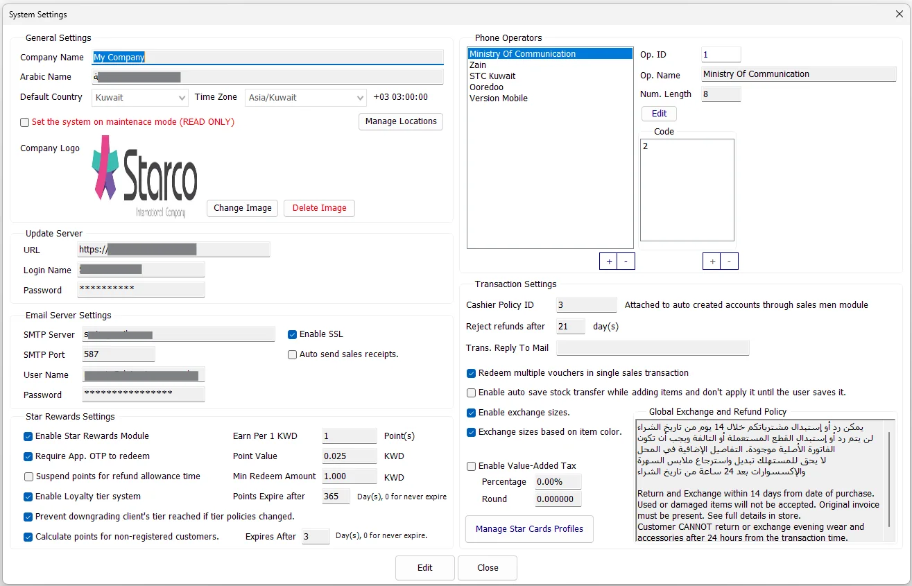
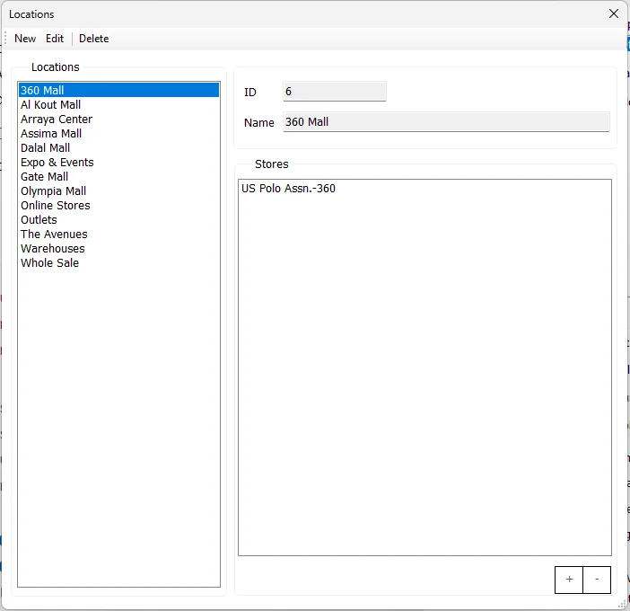

Settings
The Settings menu opens the System Settings window, which contains company-wide IMS configuration for company identity, country/time zone, maintenance mode, locations, update-server access, email, Star Rewards, phone operators and transaction rules.

General Settings
| Setting | Purpose |
|---|---|
| Company Name / Arabic Name | The company names stored in the IMS system settings. |
| Default Country | The default country used by IMS configuration. Country selection also helps IMS select an appropriate time zone. |
| Time Zone | The PostgreSQL time-zone name used by IMS. The current abbreviation and UTC offset are shown beside it. |
| Maintenance Mode | Set the system on maintenance mode (READ ONLY) places IMS in its maintenance/read-only operating state. |
| Company Logo | The company image stored in IMS and available to the application where company branding is used. |
| Manage Locations | Opens the Locations maintenance screen for logical Store groupings. |
Country choices come from the IMS country table. Time-zone choices come from PostgreSQL's time-zone catalog, and IMS displays the selected zone's abbreviation and UTC offset.
Company Logo
Change Image accepts JPG, JPEG, GIF or BMP images. IMS resizes the image to 400 × 300 and, when necessary, compresses it before storing it. The stored image must remain within the application's image-size limit. Delete Image removes the stored company logo after confirmation.
Manage Locations
Click Manage Locations to maintain named logical Locations and associate Stores with each Location. This is separate from the Store master itself: a Location is a grouping layer that can contain one or more Stores.

The Locations screen provides New, Edit and Delete actions. The Stores area uses + and - controls to maintain the Stores belonging to the selected Location.
Update Server
| Field | Purpose |
|---|---|
| URL | Server/location configured for IMS application updates. |
| Login Name | Account used to access the configured update location. |
| Password | Password associated with the update-server account; masked on screen. |
The Update Server URL and login are saved as nonsecret settings. Password status and updates use IMS Security Guard. The stored-password mask indicates that a password already exists; leaving the password blank or unchanged does not clear it. If no password is stored and both URL and login are supplied, a password is required.
Legacy update-server settings may be migrated when this screen loads. Migration does not establish that historical stored values have been removed. Password updates and the remaining settings are saved separately; do not assume that an error leaves both unchanged.
Email Server Settings
| Setting | Purpose |
|---|---|
| SMTP Server | Outgoing mail server used by IMS email functions. |
| SMTP Port | SMTP server port. |
| User Name / Password | SMTP authentication credentials. The password is masked on screen. |
| Enable SSL | Enables the SSL/TLS option used by the configured SMTP connection. |
| Auto send sales receipts | Enables the system setting for automatic email delivery of sales receipts. |
Star Rewards Settings
This area controls the company-wide Star Rewards/Loyalty configuration.
| Setting | Purpose |
|---|---|
| Enable Star Rewards Module | Turns the Star Rewards functionality on or off. |
| Earn Per 1 KWD | Number of loyalty points earned for one unit of the configured earning amount. |
| Point Value | Redemption value of one point in the local currency. |
| Minimum Redeem Amount | Minimum local-currency amount that can be redeemed. |
| Require App. OTP to redeem | Requires the application's OTP verification for redemption. |
| Suspend points for refund allowance time | Controls whether earned points are held during the permitted refund period. |
| Enable Loyalty tier system | Enables loyalty tiers. |
| Prevent downgrading client's tier reached | Keeps a customer's reached tier from being reduced if tier policies later change. |
| Points Expire after | Number of days after which points expire; the screen indicates 0 for never expire. |
| Calculate points for non-registered customers | Allows points to be calculated for customers who are not registered. |
| Expires After | Expiry period for points calculated for non-registered customers; 0 means never expire. |
When Star Rewards is enabled, IMS requires valid non-zero earning, point-value and minimum-redemption values before System Settings can be saved.
Phone Operators
Phone Operators maintains the mobile/telephone operator definitions used by IMS phone-number handling.
| Field | Purpose |
|---|---|
| Op. ID | IMS operator identifier. |
| Op. Name | Operator/company name. |
| Num. Length | Expected phone-number length for the operator. |
| Code | One or more starting/prefix codes associated with the operator. |
Use the operator +/- controls to add or remove operators. Edit allows the Name, Number Length and starting Codes to be changed. A new operator requires a Name, Number Length and at least one Code.
Transaction Settings
| Setting | Business effect |
|---|---|
| Cashier Policy ID | Group Policy ID attached to user accounts automatically created through the Sales Men/Ladies module. |
| Reject refunds after N day(s) | Defines the company refund-grace period used by the sales workflow. |
| Trans. Reply To Mail | Reply-To email address used by transaction-related email. IMS validates the address format when supplied. |
| Redeem multiple vouchers in single sales transaction | Allows more than one voucher to be redeemed in one sale. |
| Auto save Stock Transfer while adding items | Enables the Stock Transfer staging/autosave behavior while items are being added; the transfer is not applied until the user saves it. |
| Enable exchange sizes | Enables the exchange-size workflow. |
| Exchange sizes based on item color | Restricts/organizes exchange sizes using the item's color when that option is enabled. |
| Enable Value-Added Tax | Enables VAT processing for the current company. When selected, Account No., Percentage and Round become editable. |
| VAT Account No. | Company VAT account number. IMS requires this value when VAT is enabled. |
| VAT Percentage | VAT rate displayed as a percentage. A zero saved percentage disables VAT. |
| VAT Round | Sales VAT rounding increment. Values greater than zero round the extracted VAT amount to the configured increment. |
| Global Exchange and Refund Policy | Company-wide return/exchange policy text used as the default policy for Stores that are not configured to force their own custom policy. |
| Manage Star Cards Profiles | Opens the Special Cards Profiles setup screen. |
When System Settings is saved, IMS applies the Global Exchange and Refund Policy to all active Stores whose Force Custom Policy option is not enabled. Stores that force a custom policy keep their own policy text.
VAT behavior
VAT configuration starts here. After VAT is enabled, the Purchase VAT / Tax Codes panel becomes available in Financial → Integration Setup, VAT Information becomes visible in Manage → Suppliers, and VAT/tax fields become available in Inventory → Purchases.
Sales treats the configured VAT rate as tax included in the receipt amount and separates the amount into VAT Base and VAT Amount. Receipt-based returns use the original sale's VAT context so a later settings change does not redefine the VAT that belonged to the original invoice.
For the complete setup sequence, see VAT & Tax Configuration.
Edit and Save
- Open System → Settings.
- Click Edit to unlock the editable company-wide settings.
- Make the required changes.
- Review the transaction, loyalty, email and maintenance options carefully.
- Click Save.
IMS records a Modified System settings entry in the activity log after the main System Settings record is saved.